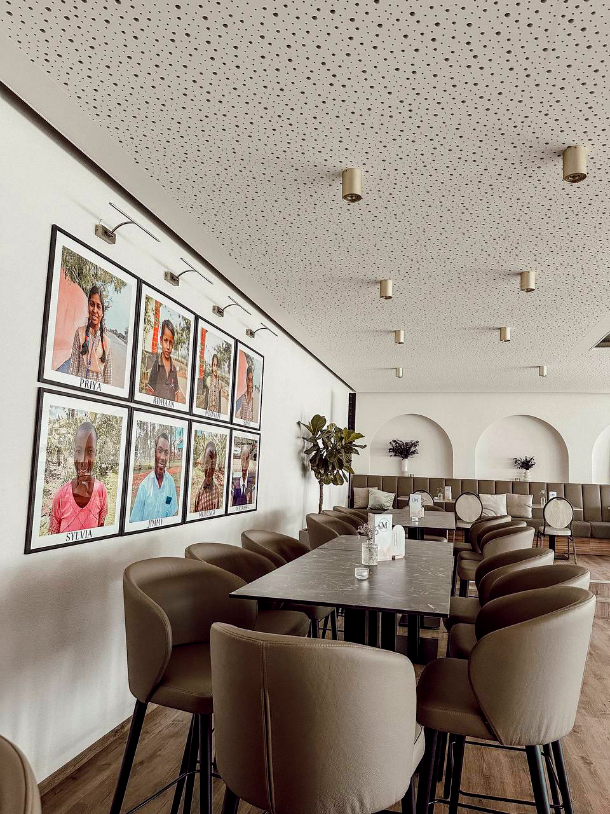
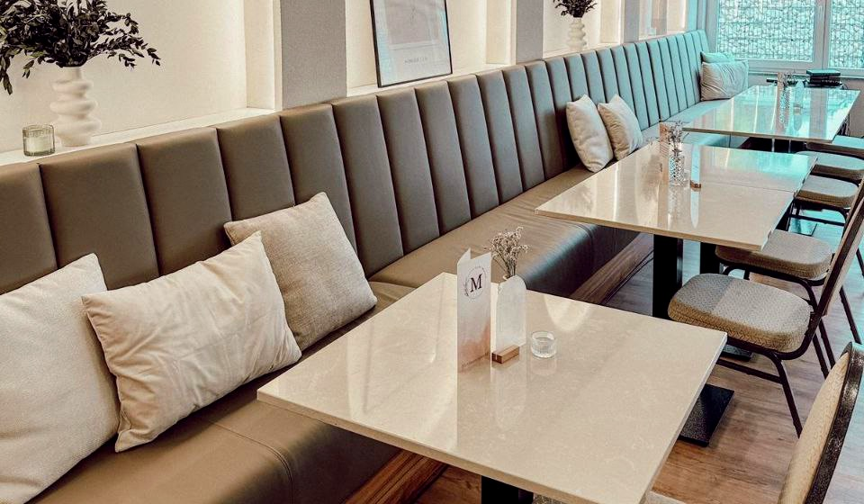
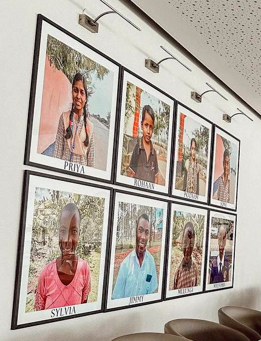

Wo Genuss Gutes tut.
Ankommen · Genießen · Wohlfühlen
In den liebevoll gestalteten Räumlichkeiten der CDH-Stephanus heißen wir euch herzlich willkommen. Die freundliche Atmosphäre lädt zum Genießen und Verweilen im Kreise seiner Liebsten ein. Neugierig? Dann reserviere dir gleich einen Tisch.



Frisch und mit viel Liebe zubereitet
Jeden Abend kochen wir warme Gerichte, und an der Theke gibt es Limonaden, Kaffee und Kuchen. Dazu kommen wechselnde Specials.
Zur Karte
Die Gesichter an der Wand
Im Café hängen die Porträts von acht Kindern und Jugendlichen aus Indien und Uganda, für die wir als Café Patenschaften übernommen haben.
Deine Spende deckt zuerst die laufenden Kosten des Cafés. Alles, was darüber hinaus zusammenkommt, geht an das Christliche Diakonische Hilfswerk Stephanus, das seit 1988 Menschen in Not hilft.
Was bei uns los ist
- i
Café-Abende
Die meisten Abende sind ganz entspannte Café-Abende mit gutem Essen und Zeit für Gespräche.
- ii
Musikabende
Am Wochenende gibt es immer wieder Live-Musik, abwechselnd mit den Infoabenden.
- iii
Infoabende
Missionare und Gäste aus dem Ausland erzählen von Hilfsprojekten, die das Hilfswerk Stephanus unterstützt.
- iv
Themenabende
Wir essen zusammen und kommen über ein bestimmtes Thema ins Gespräch.
Vom Konferenzraum zum Café
Im Sommer 2023 haben Ehrenamtliche aus der Gemeinde den früheren Konferenzraum des CDH-Stephanus übernommen und mit viel Handarbeit zum Café umgebaut.
Seit September 2023 ist Café Manna geöffnet. Der Raum steht auch für Familienfeiern und andere Veranstaltungen zur Verfügung.
Unsere Geschichte